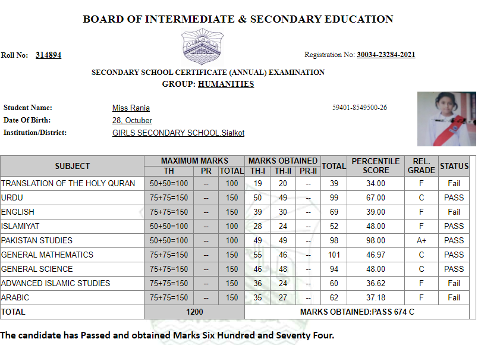
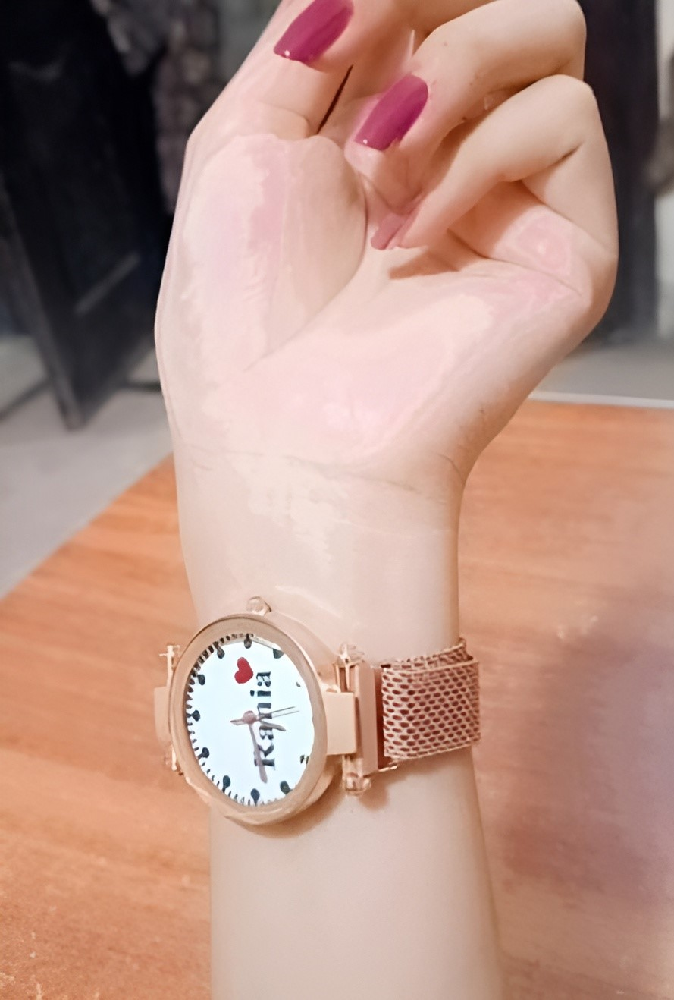

Once upon a time, in a land filled with textbooks and homework, a girl named Rania was born on October 29th. Legend has it that her first words were, "Do I really have to study?" From that moment on, she became known as the clever, naughty, and delightfully mischievous student who could charm her way out of anything—even homework!

As Rania made her way through school, she quickly discovered that her true talents lay not in math or science, but in the fine art of dodging responsibility. Her report cards were a colorful array of D’s and F’s, which she proudly displayed on her fridge. To Rania, a “bad” mark was merely a sign of her artistic expression.When it came time to pass her matriculation exams, Rania knew she had to think outside the box. With a wink and a grin, she decided to embrace her inner entrepreneur. Armed with a few snacks and a persuasive smile, she offered the examiner a “special favor”—which, let’s be honest, was more like a bribe wrapped in candy. Miraculously, she squeaked through, much to the dismay of her more studious peers!
Rania then entered college, where she continued her shenanigans. Despite her lack of academic prowess, she somehow graduated and even thought about joining the army. After a grueling test, however, Rania realized she had "not enough merit" to move forward. Who knew a knack for mischief wouldn’t cut it in the military? 
See Result
Eventually, Rania became a teacher. Yes, you heard that right—a teacher! However, her past quickly caught up with her when her students, particularly the notorious duo, Students, delighted in reminding her of her less-than-stellar academic career. Every day was a new opportunity for them to tease her about her colorful grades, with chants of, “Hey, Miss Rania! Need a tutor?”
TIME WITH US
As we wrap up our time in eighth grade, I can't help but reflect on how lucky we were to have you as our teacher. You stepped in just before exams and turned our worries into excitement with your engaging lessons, even when we couldn't resist annoying you with our antics. You assigned loads of homework, and while we might have grumbled, your teaching helped us excel in our papers. It was a bittersweet moment when you didn’t follow us to ninth grade, replaced by a rather strict teacher. Yet, many of us kept in touch with you, cherishing the fun we had, from playful banter to late-night chats during summer holidays. We remember the day We gave you that watch—  it was just a small token of appreciation for all the joy you brought into our lives. As your birthday approaches on October 29, I’ve been working on a special coding project just for you. Despite the times I may have gotten frustrated, you always knew how to bring a smile to my face. Thank you for being an incredible teacher and a wonderful friend!
Rania, the girl whose birthday falls on October 28th, has always believed that her birthdate makes her a little extra special—like a limited-edition Halloween candy nobody knew they wanted! Each year, she throws a party that’s part birthday bash, part costume contest, and all chaos. Ah, just another year of Rania’s epic birthday adventures!
We just wanted to say I'm sorry if I’ve been a bit annoying lately! We really enjoy our fun moments together, and We appreciate your sense of humor. Sometimes We get a little carried away trying to keep things lively! Thanks for being such a great sport, and let’s keep the good times rolling! There’s a delightful charm in a girl with a small face, petite stature, and a big attitude even if she sometimes jokes about having “less brain.” Her playful spirit and goofy antics bring laughter wherever she goes, and her confidence makes her stand out in any crowd. With quick comebacks and infectious giggles, she shows us that you don’t need to be tall or have all the answers to be the life of the party. It’s her big personality that truly shines, proving that fun and attitude come in all sizes!